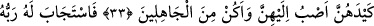

ZİNDAN DAHA İYİDİR
33. “Yûsuf dedi ki: “Ey Rabbim! Bana zindan, bunların benden istediklerinden
daha iyidir. Eğer onların hîlelerini benden çevirmezsen, onlara meyleder ve
câhillerden olurum.”
34. Rabbi onun duasını kabul etti ve onların hîlelerini ondan uzaklaştırdı. Çünkü
O çok iyi işiten, pek iyi bilendir.
35. Sonunda (Aziz ve arkadaşları) kesin delilleri gördükleri halde yine de onu bir
süre zindana atmaları kendilerine uygun geldi.
“Yûsuf” Rabbine yalvararak “dedi ki: “Ey Rabbim! Bana” Züleyhâ’nın beni atmakla
tehdit ettiği “zindan, bunların benden istediklerinden daha iyidir.” Yani bana göre
zindan Züleyhâ’nın istediğine râm olmaktan daha tercîhe şayandır. Çünkü birincisi için
güzel bir âkıbet vardır, ama ikincisi için böyle bir şey yoktur.
Onların işlerinden hayrete düştüm
Bana zindan onların cemâlinden iyidir
Yüz yıl zindanda oturmam daha iyidir
Bir an onların yüzünün güzelliğini görmekten
Nâmahreme bakmak gönlü kör eder
İlâhî yakınlık devlethânesinden uzak eder
İşte o zaman melekler Yûsuf’a acıyarak ağladılar. Cebrail Yûsuf’a inerek şöyle dedi:
“Ey Yûsuf! Rabbin sana selam edip şöyle buyuruyor: “Sabret, çünkü sabır kurtuluşun
anahtarıdır, sabrın sonu selamettir, övgüye layıktır.”
‘Bunların benden istediklerinden’ ifadesinde isteme/çağırma fiili bütün kadınlara
isnâd edilmiştir. Çünkü onların hepsi Yûsuf’a nasihat (!) ederek Züleyhâ’ya karşı
gelmekten sakındırmaya çalışmışlardı. Bu isnâdın sebebi, -yukarıda zikredildiği üzere-
bütün kadınların Yûsuf’u kendilerine râm olmaya çağırmaları da olabilir.